Consider the case that the boundary flux surface is circular with radius r = a and the center of the cirle at (R = R0,Z = 0). Consider the case 𝜀 = r∕R0 → 0. Expanding Ψ in the small parameter 𝜀,
|
| (584) |
where Ψ0 ∼ O(𝜀0), Ψ1 ∼ O(𝜀1). Substituting Eq. (584) into Eq. (583), we obtain
  r r + + 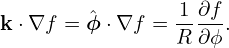r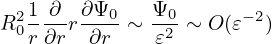+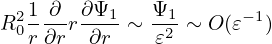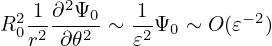+ 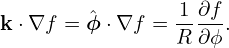r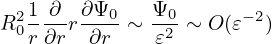+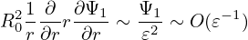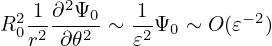+  −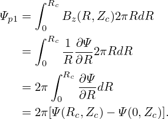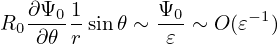−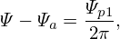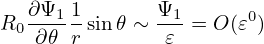 = −μ0(R0+r cos𝜃)2P′(Ψ
0+Ψ1)−g′(Ψ0+Ψ1)g(Ψ0+Ψ1) −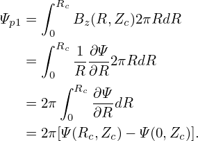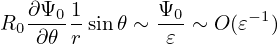−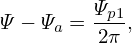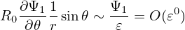 = −μ0(R0+r cos𝜃)2P′(Ψ
0+Ψ1)−g′(Ψ0+Ψ1)g(Ψ0+Ψ1)
|
Multiplying the above equation by R02, we obtain
|
| (585) |
Further assume the following orderings (why?)
|
| (586) |
and
|
| (587) |
Using these orderings, the order of the terms in Eq. (585) can be estimated as
|
| (588) |
|
| (589) |
|
| (590) |
|
| (591) |
|
| (592) |
|
| (593) |
|
| (594) |
|
| (595) |
|
| (596) |
The leading order (𝜀−2 order) balance is given by the following equation:
|
| (597) |
It is reasonable to assume that Ψ0 is independent of 𝜃 since Ψ0 corresponds to the limit a∕R → 0. (The limit a∕R → 0 can have two cases, one is r → 0, another is R →∞. In the former case, Ψ must be independent of 𝜃 since Ψ should be single-valued. The latter case corresponds to a cylinder, for which it is reasonable (really?) to assume that Ψ0 is independent of 𝜃.) Then Eq. (597) is written
|
| (598) |
(My remarks: The leading order equation (598) does not corresponds strictly to a cylinder equilibrium because the magnetic field B = ∇Ψ0 ×∇ϕ + g∇ϕ depends on 𝜃.) The next order (𝜀−1 order) equation is
R02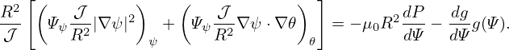 r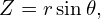+R02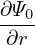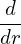−R0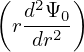cos𝜃 = −μ0R022R
0r cos𝜃P′(Ψ0)−μ0R04P′′(Ψ
0)Ψ1−R02[g′(Ψ
0)g(Ψ0)]′Ψ1 r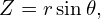+R02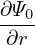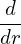−R0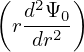cos𝜃 = −μ0R022R
0r cos𝜃P′(Ψ0)−μ0R04P′′(Ψ
0)Ψ1−R02[g′(Ψ
0)g(Ψ0)]′Ψ1
|
|
| (599) |
|
| (600) |
It is obvious that the simple poloidal dependence of cos𝜃 will satisfy the above equation. Therefore, we consider Ψ1 of the form
|
| (601) |
where Δ(r) is a new function to be determined. Substitute this into the Eq. (), we obtain an equation for Δ(r),
|
| (602) |
 | (603) |
|
| (604) |
|
| (605) |
Using the identity
![[ ( )]
1 d- r dΨ0-
r dr dr](tokamak_equilibrium796x.png) = 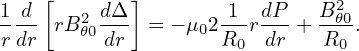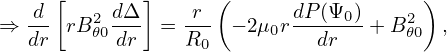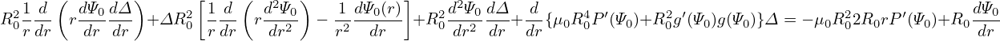−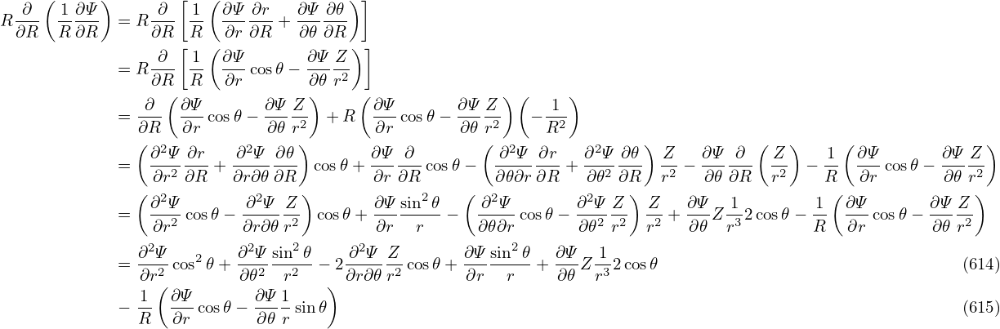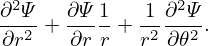, = 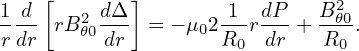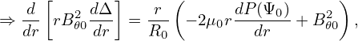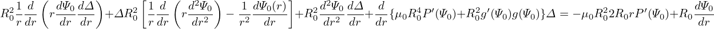−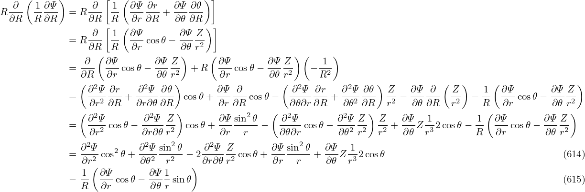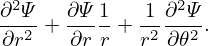,
|
equation () is written as
|
| (606) |
Using the leading order equation (), we know that the second and fourth term on the l.h.s of the above equation cancel each other, giving
|
| (607) |
|
| (608) |
Using the identity
|
| (609) |
equation (608) is written
|
| (610) |
|
| (611) |
Using
 | (612) |
equation (611) is written
|
| (613) |
|
| (614) |
which agrees with equation (3.6.7) in Wessson’s book[27].